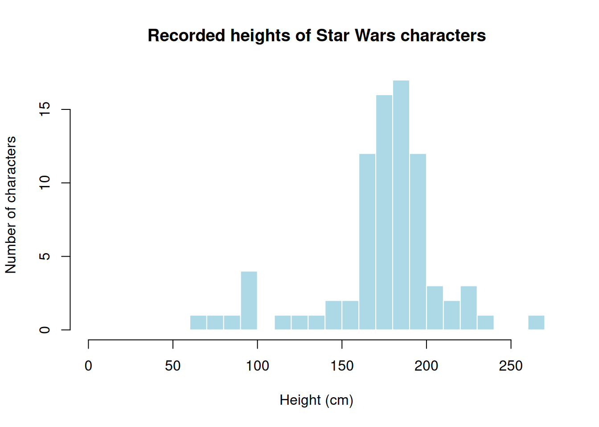
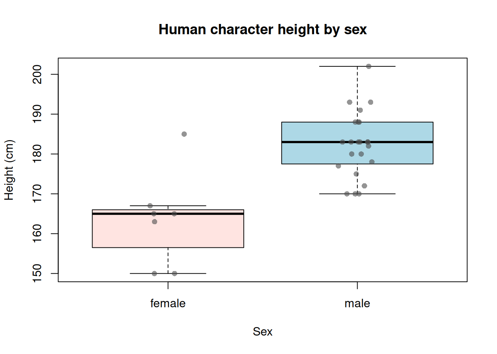
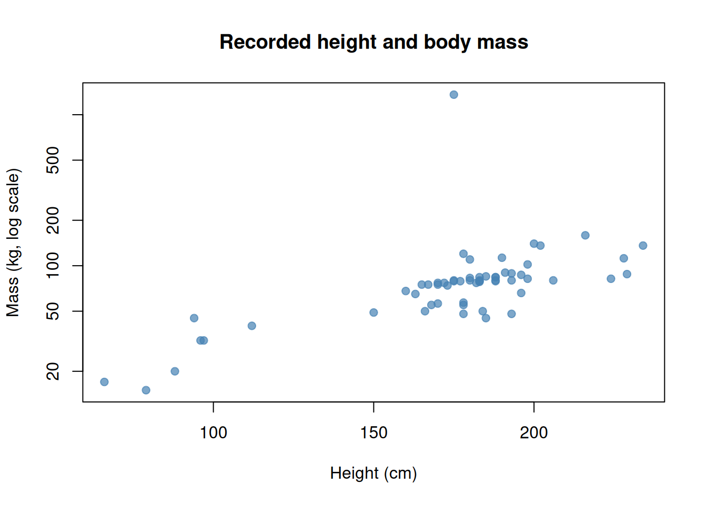

starwars_url <- paste0(
"https://raw.githubusercontent.com/tidyverse/dplyr/main/",
"data-raw/starwars.csv"
)
starwars_data <- read.csv(url(starwars_url), stringsAsFactors = FALSE)Sample notebook analysis
data-science
plotting
base-r
Here is a demo of how you can include projects with code using Quarto
A quick look at Star Wars characters
The Star Wars sample data is distributed by the dplyr project, but the analysis below uses only base R. The CSV is loaded directly from the project’s source; the results describe this selected set of characters, not a random sample of a larger population.
1. How are recorded heights distributed?
observed_heights <- starwars_data$height[!is.na(starwars_data$height)]
hist(
observed_heights,
breaks = seq(0, ceiling(max(observed_heights) / 10) * 10, by = 10),
main = "Recorded heights of Star Wars characters",
xlab = "Height (cm)",
ylab = "Number of characters",
col = "lightblue",
border = "white"
)
2. Do human characters’ recorded heights vary by sex?
Restricting this comparison to humans avoids pooling species with very different typical heights. Keep only male and female characters with recorded heights; points show individual observations.
sex_heights <- subset(
starwars_data,
species == "Human" & sex %in% c("male", "female") & !is.na(height)
)
sex_heights$sex <- factor(sex_heights$sex, levels = c("female", "male"))
boxplot(
height ~ sex,
data = sex_heights,
outline = FALSE,
main = "Human character height by sex",
xlab = "Sex",
ylab = "Height (cm)",
col = c("mistyrose", "lightblue")
)
stripchart(
height ~ sex,
data = sex_heights,
vertical = TRUE,
method = "jitter",
pch = 16,
col = adjustcolor("gray30", alpha.f = 0.6),
add = TRUE
)
3. Are taller characters also heavier?
Mass is shown on a logarithmic scale because the recorded values span a wide range. This plot includes characters with positive recorded height and mass.
height_mass <- subset(
starwars_data,
!is.na(height) & !is.na(mass) & height > 0 & mass > 0
)
plot(
height_mass$height,
height_mass$mass,
log = "y",
pch = 19,
col = adjustcolor("steelblue", alpha.f = 0.7),
main = "Recorded height and body mass",
xlab = "Height (cm)",
ylab = "Mass (kg, log scale)"
)
Statistical test: difference in mean human height by sex
As a final comparison, Welch’s two-sample t-test assesses whether the mean recorded heights differ between male and female human characters. It does not assume equal group variances. The groups are small and these characters are not a random sample, so treat the result as illustrative rather than evidence about a broader population.
t.test(height ~ sex, data = sex_heights)
Welch Two Sample t-test
data: height by sex
t = -3.9259, df = 7.8079, p-value = 0.004597
alternative hypothesis: true difference in means between group female and group male is not equal to 0
95 percent confidence interval:
-29.921948 -7.717803
sample estimates:
mean in group female mean in group male
163.5714 182.3913